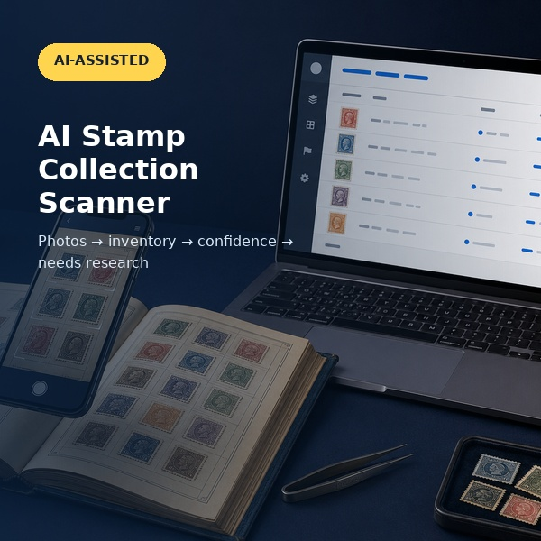

Guia prático para tirar fotos, usar a detecção automática, revisar o inventário e salvar seu trabalho.

O Browser Beta ajuda a localizar selos visíveis nas suas fotos e colocá-los em um inventário editável ligado à foto de origem. A revisão do usuário continua importante.
São aceitos JPG/JPEG, PNG e WebP. Cada envio recebe seu próprio número de foto, mesmo quando dois arquivos têm o mesmo nome. Um inventário pode conter até 100 fotos.
Diretamente de cima, nítida, bem iluminada e com cada selo totalmente visível.
Uma página de álbum muito cheia, leve inclinação, texto ou carimbos podem dificultar a detecção.
Selos amontoados ou sobrepostos. Coloque os selos soltos lado a lado, sem sobreposição, e tire outra foto.
Por que a sobreposição é difícil: quando parte de um selo fica escondida sob outro, sua forma completa não aparece na foto. O scanner pode deixar de detectá-lo ou interpretar dois selos como um único objeto.
Abra o AI Stamp Scanner, selecione suas fotos e escolha Criar inventário. O detector tenta localizar separadamente cada selo físico visível e cria registros para os selos detectados.
Quer que país, período, valor e mais sejam preenchidos automaticamente em vez de "Desconhecido"? Cole sua própria chave de API gratuita do Google Gemini no topo da página do scanner (obtenha uma no Google AI Studio, não é necessário cartão de crédito). A chave fica apenas no seu navegador. Linhas preenchidas assim recebem o status "Sugestão da IA" e, como qualquer resultado automático, ainda precisam ser revisadas.
Cada selo físico visível separadamente deve gerar seu próprio registro, mesmo quando vários selos são idênticos. Quantidade é um campo editável e não substitui a detecção de objetos individuais. Sempre compare o número de registros com a foto.
Compare o inventário com a foto de origem. Preste atenção especial a páginas muito cheias, selos girados, fotos escuras e sobreposição. Adicione ou corrija informações quando necessário.
As fotos e os dados temporários são processados localmente no navegador e não são enviados para identificação de selos. Estatísticas de uso anônimas podem ser coletadas para melhorar a versão beta. Salve regularmente o trabalho em Excel ou CSV.
Você pode salvar em Excel ou CSV. Ambos incluem ID do registro, número da foto, nome original do arquivo e referência da imagem. Fotos e miniaturas não são incorporadas à planilha no Browser Beta v1.0.
Limite: detecção não significa que todos os selos serão encontrados ou identificados com certeza. O Browser Beta v1.0 não determina valor, raridade, autenticidade, marca-d'água, perfuração exata ou número de catálogo.